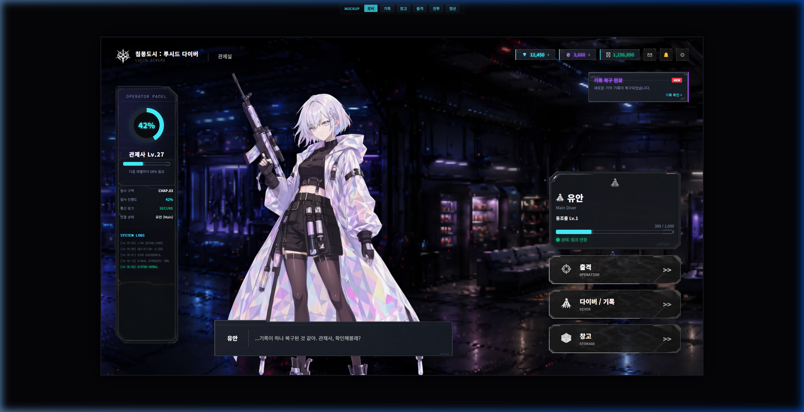

Co-op PvE / System Planning
지구-164991: 청사진 각성자
청사진 인벤토리를 전장에 펼쳐 여러 기물을 생성하고, 약점을 지닌 코어를 보호하며 싸우는 협동 PvE 기획서입니다.
- 청사진 인벤토리
- 협동 PvE
- 전술 배치
Profile
저는 단순히 아이디어를 제안하는 것보다, 플레이어가 어떤 선택을 하고 어떤 감정을 받는지 시스템, 화면 흐름, 일정, 구현 단위로 풀어내는 일에 관심이 있습니다.
팀 프로젝트에서는 일정표와 마일스톤 관리, QA와 회의록 정리, 기능 명세 작성, Enemy AI와 Tutorial, Item Looting 흐름 구현을 함께 맡으며 기획과 구현의 연결 지점을 경험했습니다.
Game Design Documents
개인 기획서의 핵심 콘셉트와 시스템 구조를 카드 형태로 정리했습니다.
Team Projects
카드를 누르면 각 프로젝트의 상세 페이지로 이동합니다.

Unity / Extraction RPG
PM, 컨셉 기획, Gameplay Programmer로 참여한 진행 중인 팀 프로젝트입니다. 컨셉 초안, Enemy AI, Box/Inventory, Artifact, VFX, Tutorial 구현과 일정/QA 문서화를 담당했습니다.

Game / Horror
Enemy AI, Level Design, Animator 구조 개선을 담당한 3D 기반 2.5D 공포 탈출 게임입니다.

Game / Puzzle Adventure
AI NPC와 대화하며 흩어진 기억을 복원해 나가는 3D 퍼즐 어드벤처 프로젝트입니다.
Core Competencies
FSM과 NavMesh를 바탕으로 감지·추적·공격·복귀까지의 행동 흐름을 구현했습니다.
Core Loop, Tutorial, UI Flow를 실제 플레이와 결과 화면까지 연결했습니다.
일정·문서·Git 작업 흐름을 정리해 팀 작업이 하나의 플레이 경험으로 이어지게 했습니다.
Technical Skills
수준은 단순 학습 여부가 아니라, 직접 설계·구현·수정해 본 범위를 기준으로 표시했습니다.
Development
Gameplay System과 UI Flow를 직접 구현하고 테스트·수정합니다.
적용: Inventory · Tutorial · SaveData · 결과 정산
Artificial Intelligence
상태 전환 규칙과 감지 정보를 분리해 Enemy의 행동을 설계합니다.
적용: 꿈식자 Patrol · Detect · Chase · Attack · Return
Collaboration
기능 단위의 변경 이력과 협업을 위한 브랜치 흐름을 관리합니다.
적용: 브랜치 전략 · 기능 단위 커밋 · 변경 이력 관리
Documentation
기획 의도와 구현 범위, 검증 결과를 팀이 확인할 수 있는 문서로 정리합니다.
적용: 마일스톤 · 개발일지 · QA 기록 · 시스템 명세